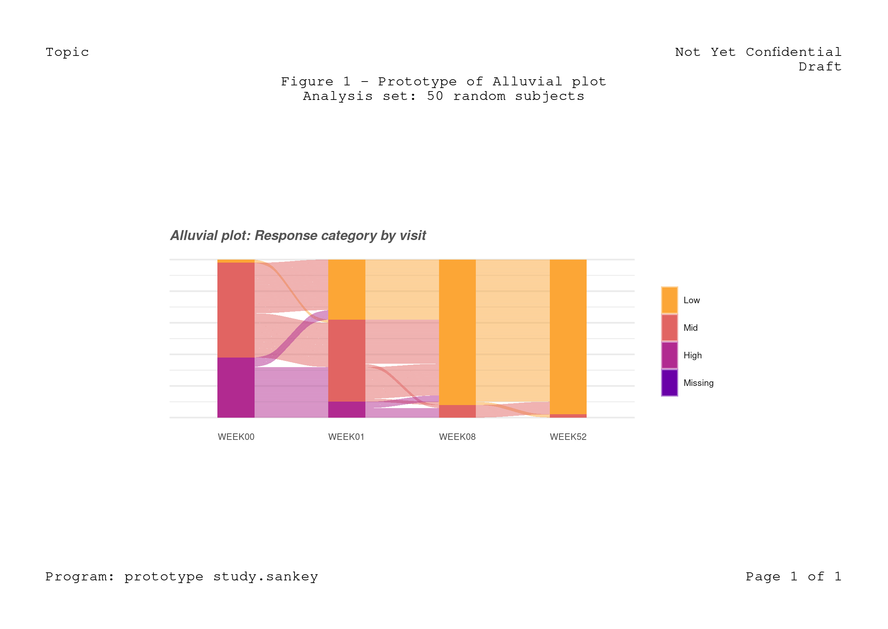

Available at:
git clone https://github.com/FCACollin/study.sankey.git
knitr::opts_chunk$set(
comment = "#>",
echo = TRUE,
error = TRUE,
fig.path = "man/figures/README-",
comment = "#>",
out.width = "100%",
fig.height = 8.3 * .66,
fig.width = 11.7 * .66,
dpi = 300
)As any R Markdown file, the params argument in the YAML front matter offers controlled-execution settings. For instance:
params:
diag: true```{r, check, eval=params$diag, include=params$diag}
devtools::check(quiet = TRUE)
```devtools::check() provides diagnostic/quality information about the package but is lengthy, hence the rendering time is substantially increased for diag: true.
devtools::check(quiet = TRUE)#> ℹ Loading study.sankey
#> Loading required package: grid
#> ── R CMD check results ───────────────────────────────── study.sankey 0.1.0 ────
#> Duration: 2m 14.2s
#>
#> > checking for unstated dependencies in examples ... OK
#> WARNING
#> ‘qpdf’ is needed for checks on size reduction of PDFs
#>
#> > checking for future file timestamps ... NOTE
#> unable to verify current time
#>
#> 0 errors ✓ | 1 warning x | 1 note x
#> Error: R CMD check found WARNINGsThe code chunks in inst/study.R are identified by knitr::read_chunk(); then can then selectively called from the README.Rmd file.
file_nm <- "inst/study.R"
knitr::read_chunk(file_nm)
message("R code chunks read from:\n", file_nm)#> R code chunks read from:
#> inst/study.R
devtools::load_all()#> ℹ Loading study.sankey#> Loading required package: ggplot2#>
#> Attaching package: 'dplyr'
#> The following objects are masked from 'package:stats':
#>
#> filter, lag
#> The following objects are masked from 'package:base':
#>
#> intersect, setdiff, setequal, union
test_dta <- adam_ww(50)
attach(test_dta, warn.conflicts = FALSE)
knitr::kable(head(adsl), caption = "Dummy ADSL dataset")| USUBJID | TRT | BASELINE | ARMCD | |
|---|---|---|---|---|
| 37 | SUBJECT 037 | ACTIVE TREATMENT DOSE 01 | 27.8 | ARM B |
| 39 | SUBJECT 039 | ACTIVE TREATMENT DOSE 01 | 25.0 | ARM B |
| 40 | SUBJECT 040 | ACTIVE TREATMENT DOSE 01 | 20.7 | ARM B |
| 105 | SUBJECT 105 | ACTIVE TREATMENT DOSE 01 | 22.8 | ARM B |
| 111 | SUBJECT 111 | ACTIVE TREATMENT DOSE 01 | 16.9 | ARM B |
| 121 | SUBJECT 121 | ACTIVE TREATMENT DOSE 01 | 21.2 | ARM B |
| USUBJID | AVISIT | AVAL | PARAMCD |
|---|---|---|---|
| SUBJECT 037 | WEEK00 | 27.8 | PASITOT |
| SUBJECT 039 | WEEK00 | 25.0 | PASITOT |
| SUBJECT 040 | WEEK00 | 20.7 | PASITOT |
| SUBJECT 105 | WEEK00 | 22.8 | PASITOT |
| SUBJECT 111 | WEEK00 | 16.9 | PASITOT |
| SUBJECT 121 | WEEK00 | 21.2 | PASITOT |
ads <- adpasi %>%
filter(AVISIT %in% c("WEEK00", "WEEK01", "WEEK08", "WEEK52")) %>%
mutate(
time = factor(AVISIT),
rsp = cut(AVAL, breaks = 3, labels = c("Low", "Mid", "High")),
rsp = add_missing(rsp),
subj = gsub("^SUBJECT (.*)$", x = USUBJID, replacement = "\\1")
) %>%
select(subj, time, rsp) %>%
arrange(rsp, time, subj)
knitr::kable(
x = head(ads),
# lintr demo: only use double-quotes
caption = 'Outlook of the analysis dataset data'
)| subj | time | rsp |
|---|---|---|
| 187 | WEEK00 | Low |
| 040 | WEEK01 | Low |
| 111 | WEEK01 | Low |
| 248 | WEEK01 | Low |
| 299 | WEEK01 | Low |
| 307 | WEEK01 | Low |
# lintr demonstration: commented code should be removed
# test <- viridis::viridis(5)
# lintr demonstration: keep using snake_case for variable and functions names
colorScale <- color_scale <- viridis::viridis(
nlevels(ads$rsp),
begin = .2, end = .8, option = "C",
direction = -1
)
names(color_scale) <- levels(ads$rsp)
gg_sankey <- ads %>%
ggplot(aes(x = time, stratum = rsp, alluvium = subj, fill = rsp)) +
geom_stratum(colour = NA) +
geom_flow(stat = "alluvium", color = "gray85", lwd = .01) +
ggtitle("Alluvial plot: Response category by visit") +
scale_fill_manual(values = color_scale) +
theme_diane()
gg_sankey <- clean_slate(margin = unit(c(1, 1, 1, 1), "cm")) %>%
add_header(left = "Topic", right = c("Not Yet Confidential", "Draft")) %>%
add_title(c(
"Figure 1 - Prototype of Alluvial plot",
"Analysis set: 50 random subjects"
)) %>%
add_figure(gg_sankey, width = unit(5, "in"), height = unit(2, "in")) %>%
add_footer("Program: prototype study.sankey", "Page 1 of 1") %T>%
grid.draw()